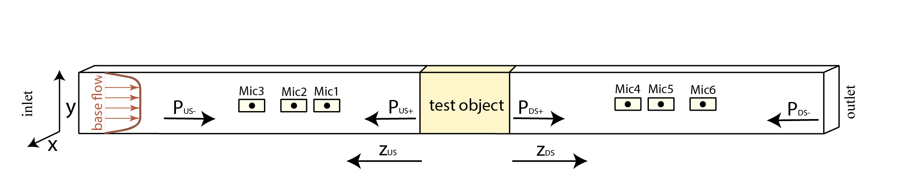

Theory and Definitions¶
Note
The full theory of acoustic induct sound decompositions can be found in this study.
Problem Description¶
Fluid-machinery in ducts such as HVAC-fans, compressors, turbines, and jet engines, create noise of a complex nature. Other components, such as mufflers, silencers and liners, are developed to reduce that noise. In order to match the design of sources and absorbers, it is often necessary to quantify their acoustic behaviour.
The sound waves inside a duct propagate towards its ends, where they are partially released into the environment and partially reflected back into the duct. The extent of this reflection depends on many factors, but mostly on the duct terminations. Direct measurements of the acoustic pressure along a duct capture a mix of emitted and reflected waves. This is often unwanted as the terminations in applications and laboratory tests differ. A common approach is to split the sound field into its upstream and downstream propagating acoustic modes, which removes the dependency of the test-results on the internal reflection of the test setup. This procedure is called acoustic mode decomposition
{kind=link}
Therefore, the pressure is sampled along the duct at several positions upstream (US) and downstream (DS) of the test object. If the pressure levels inside the duct are sufficiently low (usually much less than 130-150 dB) to cause only linear acoustic waves, and if the sound fields are stationary, we can designate the sound field at any position of the duct as a superposition of waves that travel towards the test-object (- waves) and waves that travel away from the test object (+ waves).
The waves can have different shapes in a duct cross section, and we call each unique shape a duct mode. In general, for high frequencies more modes can be cut-on and, therefore, propagate. If we measure the pressure along the duct, we can describe its value at each positions with the following equations
Note
The sound fields are investigated in the frequency domain and only one frequency is considered at a time. This operation requires that the sound fields are linear and time-invariant. This is true for many relevant cases.
Here, \(N\) is the maximum number of modes that propagate, \(n\) is the number of pressure probes, \(p_{i\pm}\) are the complex pressure amplitudes of the i-th mode. By ‘complex’ we mean, that they have an amplitude and a phase. \(\Psi_{i\pm}(x,y)\) is the mode shape within a cross section and \(T_{i\pm}(z)\) describes the propagation of the mode, including its velocity and attenuation.
The set of equations can be reformulated into a matrix-vector notation
where \(\mathbf{p}\) is a vector containing all measured pressures along the duct, \(\mathbf{p_\pm}\) is a vector that contains the complex amplitudes of the propagating modes and \(\mathbf{M}\) is the modal matrix that contains the information about the mode shapes, mode propagation, and mode attenuation.
If we measure the sound field at several points, we can solve for the complex pressure amplitudes by inverting the modal matrix
Note
In order to solve the complex modes, the modal matrix \(\mathbf{M}\) needs to be well-conditioned. This requires measuring at least \(2 \times N\) positions and providing sufficient microphone spacing.
Constructing the Modal Matrix¶
Constructing the modal matrix is the key functionality of this module. Its elements are formed by the mode shapes \(\Psi_{i\pm}(x,y)\) and the mode propagation \(T_{i\pm}(z)\). It has the dimension \(n \times 2N\).
The module automates most of the steps needed to create the modal matrix once sufficient information is provided. On an application level, we are only required to perform the object initialization and set the microphone positions; then we are ready to decompose sound fields. The algorithms in the module construct the modal matrix.
Object Initialization¶
The initialization of a WaveGuide object only requires a few parameters. However, the WaveGuide can be modified
by passing optional arguments to realize specific test conditions.
In the simplest case, we can create a circular duct with a radius of 0.01 m by calling
from acdecom import WaveGuide
radius = 0.01 # m
domain = WaveGuide(dimensions = (radius,))
If we want to change the cross section, the attenuation model, temperature, and the Mach-number, we can pass arguments to the initialization.
from domain import WaveGuide
a = 0.01 # m
b = 0.1 # m
temp = 300 # Kelvin
Machnumber = 0.1
rectangular_domain = WaveGuide(dimensions = (a,b), cross_section="rectangular", damping="stinson",
M=Machnumber, temperature=temp)
Note
A full list of arguments can be found in the class documentation of the WaveGuide object.
Microphone Position¶
A microphone has three spatial coordinates. Those are cartesian (x, y, z). However, for ducts with a circular cross section, the coordinates are in the cylindrical coordinates (r, \(\phi\), z). The microphone positions can be passed in two ways.
The WaveGuide.set_microphone_positions() method can be used to pass lists of positions directly to the object.
x = [0.05, 0.05, 0.05] # m
y = [0.0, 0.0, 0.0] # m
z = [0.0, 0.01, 0.3] # m
rectangular_domain.set_microphone_positions(z, x, y)
r = [0.05, 0.05, 0.05] # m
phi = [0, 90, 45] # deg
z = [0.0, 0.01, 0.3] # m
circular_domain.set_microphone_positions(z, r, phi)
Warning
For a circular waveguide, the microphone position is in cylindrical coordinates. The circular position is defined in degree (not in radians).
The WaveGuide.read_microphonefile() method can be used to read a file that contains the microphone positions. The
microphone file must have three columns, representing the three coordinates (either cartesian or cylindrical).
z [m] |
r [m] |
phi [deg] |
|---|---|---|
0.0 |
0.05 |
0 |
0.01 |
0.05 |
90 |
0.3 |
0.05 |
45 |
We can read a file of this structure with any number of microphone positions. The method makes use of numpy.loadtxt function, and we can pass all keywords that are accepted by this function to describe the file format.
circularDomain.read_microphonefile("microphones.txt", cylindrical_coordinates=True,
delimiter=" ", skiprows=1)
Warning
If our file has header information, we need to skip those lines using the skiprows argument.
Note
If we want to change the reference cross section, we can use the method WaveGuide.set_distance(). This will
shift all microphones, which is a convenient way to adjust the reference cross section of the decomposition. It is
good practice to first define all microphone positions relative to the first microphone and to move the reference
cross section afterward.
Decomposition¶
After the object is initiated and the microphone positions are defined, sound fields can be decomposed.
Note
Although the module prepares the modal matrix based on the input, the user can call all functions that are involved to extract the output if needed. That can be useful, for example, if we are only interested in the wavenumbers, but not in the decomposition.
For the decomposition, we can use the method WaveGuide.decompose(). The method requires a
numpy.ndArray as input. The
information for a test with three microphones upstream and three microphones downstream would have at least the
following format:
frequency [Hz] |
Mic1 US |
Mic2 US |
Mic3 US |
Mic1 DS |
Mic2 DS |
Mic3 DS |
|---|---|---|---|---|---|---|
f1 |
p1 US |
p2 US |
p3 US |
p1 DS |
p2 DS |
p3 DS |
If the measurement is stored in a text file, we can load it to a numpy.ndArray with the numpy.loadtxt function. In order to decompose the fields, we need to provide the decomposition method the columns wherein we have stored the frequency and the pressure data
pressure = numpy.loadtxt("measurement.txt", dtype=complex, delimiter=" ", skiprows=1)
f_col = 0
mic_col_us = [1,2,3] # for the upstream microphone data
mic_col_ds = [4,5,6] # for the upstream microphone data
decomp_ds, headers_ds = circular_domain.decompose(pressure, f_col, mic_col_ds)
circular_domain.set_flip_flow(True) # changes the flow direction for the upstream component
decomp_us, headers_us = circular_domain.decompose(pressure, f_col, mic_col_us)
Note
The upstream and the downstream side of a test duct need to be decomposed separately. In this example, we used the same object and flipped the Mach-number for the upstream side. If the Mach-number or the microphone positions are different on the upstream and the downstream side, two objects should be created.
Internal Procedure to Compute the Modal Matrix¶
Based on the microphone positions, the duct cross section, and the attenuation model the modal matrix is set up automatically when a decomposition is initialized. However, this only works if we use the preset models; when we implement other duct cross sections or new attenuation models, we need to interfere with the standard procedure.
The most important steps involve computations of the mode shapes \(\Psi_{i\pm}(x,y)\) and the mode propagation \(T_{i\pm}(z)\) for each mode and each microphone position.
The mode shapes \(\Psi_{i\pm}(x,y)\) are computed with the WaveGuide.get_psi() method. This method computes
the mode shapes based on the cross section and the mode order and normalizes the modes to be ortho-normal, i.e.,
and \(\delta\) is the Kronecker delta. The normalization factor is computed in WaveGuide.get_c().
Warning
The function WaveGuide.get_C() and WaveGuide.get_psi() are only place-holders. They are overwritten
by the specific pre-defined functions when a WaveGuide is initialized. If we want to define our own functions,
we can inherit from the WaveGuide class and overwrite the functions as shown in the examples. We can
also pass a customized function as an optional argument as described in the class documentation for the
WaveGuide class.
The wave propagation T_{ipm}(z) is computed with the WaveGuide.get_T() method.
and \(k_{mn\pm}\) is the dissipative wavenumber. The wavenumber is computed with the
WaveGuide.get_wavenumber() method.
\[k_{mn\pm} = \pm K_0 \frac{\omega}{c} \frac{\sqrt{1-(\kappa_{mn}c/\omega)^2(1-M)}\mp M}{1-M^2}\]
Here, \(K_0\) is the dissipation factor (see WaveGuide.get_K0() )
\(\omega\) is the angular frequency, \(c\) is the speed of sound,
\(\kappa_{mn}\) is the eigenvalue (see WaveGuide.get_eigenvalue() ), and
\(M\) is the Mach_number.
Note
If we want to define our wavenumber model, we can inherit from WaveGuide class and overwrite the
functions as shown in the examples. We can also pass a customized function as an optional argument as described in
the class documentation for the WaveGuide class.
More information on the implementation can be found in the class reference WaveGuide . The source code that
shows the full implementation of the mode decomposition can be found on acdecom’s
GitHub Page.